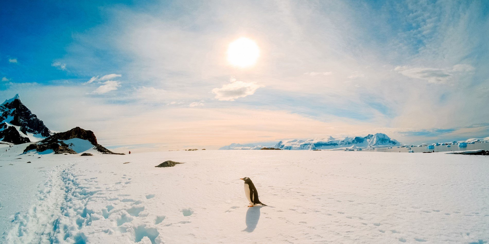

INTERESTING FACTS ABOUT ANTARTICA

- The Antarctic Ice Sheet Is Over 40 Million Years Old
- Antarctica covers 14.2 million km² (5.5 million square miles)
- The Dry Valleys in Antarctica are the driest places on earth. With such low humidity and moisture on this portion of the continent, snow and ice cannot even accumulate, which leaves the valleys as just a dusty expanse of dirt.
- Antarctica is, on average, the windiest place on earth. Scientists exploring this southerly landmass have reported wind speeds that have reached up to 200 miles per hour.
- The Antarctic Ice Sheet is the single biggest mass of ice in the world and can sometimes be up to four miles thick. The continent as a whole contains about 90 percent of the planet's freshwater ice and around 70 percent of the total fresh water on earth!
- Scientists claim that if the West Antarctic Ice Sheet were to melt, it would raise global sea levels by about 16 feet.
- The Ross Ice Shelf - a floating tongue of ice that extends off the continent's main landmass - encompasses more than 510,000 square kilometres and is the largest ice shelf that has ever been discovered.
- Deep Lake in Antarctica is so salty that it cannot freeze, even in temperatures as low as negative 15 degrees Celsius!
- In January of 1979, Emile Marco Palma became the first human ever to be born on Antarctica. Since his historic passage through the birth canal, only 10 other people have been born on the continent.
- There are 30 different countries that operate 80 research stations situated around the continent. The human inhabitants who occupy these facilities number around 4,000 during the summer months and only 1,000 during the long, harsh winters.